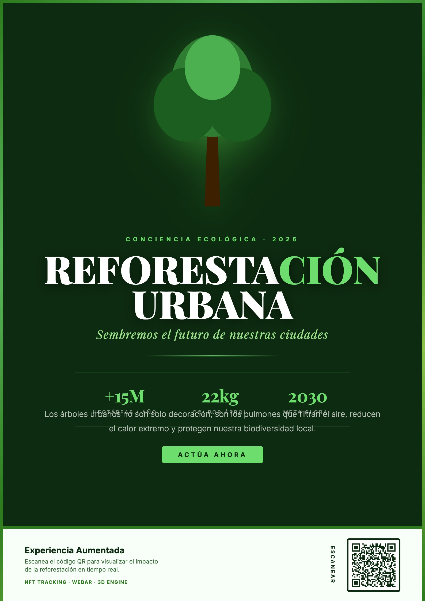

Estudiante: Axel García Villagómez
El presente proyecto surge de la necesidad de utilizar la Realidad Aumentada (RA) como una herramienta de impacto social. Se ha seleccionado el tema de la Reforestación Urbana debido a su relevancia crítica en la mitigación del cambio climático en entornos metropolitanos.
El objetivo es transformar un medio estático (un póster) en una ventana informativa dinámica que permita visualizar, a través de video y contenido multimedia, el beneficio directo de la plantación de árboles, logrando una conexión emocional y cognitiva más profunda con el espectador.

Figura 1: Diseño final del póster con jerarquía visual optimizada y código QR de acceso.
El póster fue diseñado bajo principios de Seguimiento de Características Naturales (NFT). Se evitó el uso de marcadores tradicionales (como los de AR.js tipo 'Hero') para ofrecer una estética limpia. El diseño incluye altos niveles de contraste, formas geométricas no repetitivas y detalles finos que sirven como "puntos de interés" para el algoritmo de visión computacional.
Utilizando herramientas de terminal y WebAssembly, la imagen se procesó para extraer descriptores visuales. Este proceso generó tres archivos fundamentales:
.fset: Estructura de características de la imagen..fset3: Datos de descriptores espaciales a múltiples escalas..iset: Imagen binaria optimizada para el motor de búsqueda.Se implementó Three.js para el renderizado de la escena. Se creó un plano con textura de video (VideoTexture) sincronizado con el marcador.
Se integró ARnft, una librería ligera de alto rendimiento que permite el seguimiento NFT directamente en navegadores móviles sin necesidad de apps externas.
La experiencia final permite que cualquier usuario, tras escanear un código QR, acceda a una webapp que activa la cámara. Al detectar el póster, se reproduce un video inmersivo sobre la superficie del mismo, creando un efecto de "póster viviente".
El proyecto se encuentra alojado en GitHub Pages bajo un entorno seguro (HTTPS), lo que garantiza la compatibilidad con los permisos de cámara de navegadores modernos como Chrome y Safari.
Este proyecto demuestra que la Realidad Aumentada no es solo un recurso estético, sino una poderosa herramienta narrativa. Al integrar el proceso de diseño gráfico con el desarrollo web y la visión artificial, hemos logrado crear un puente efectivo entre el mundo físico y el digital para una causa social necesaria.